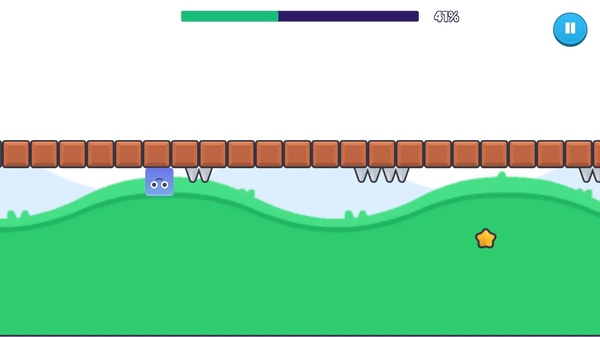
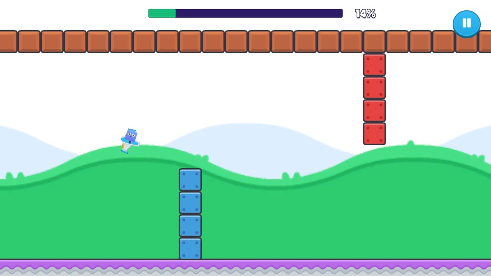
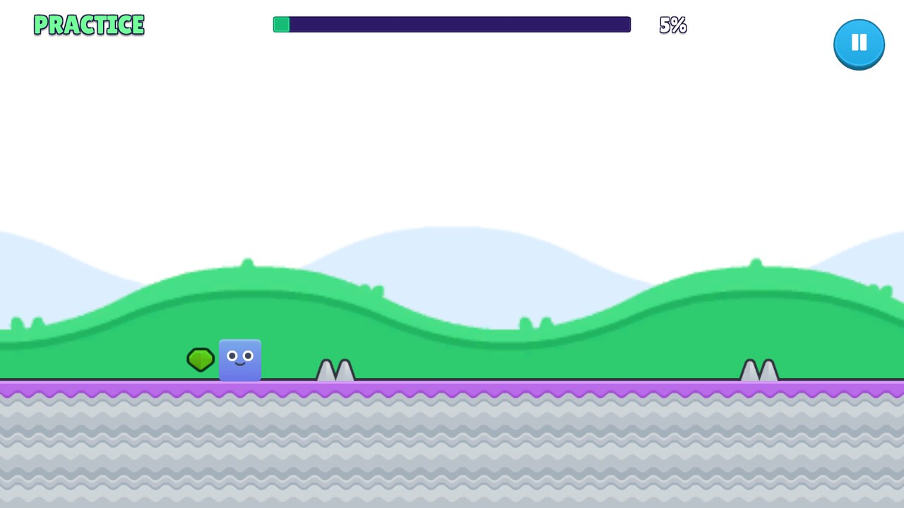
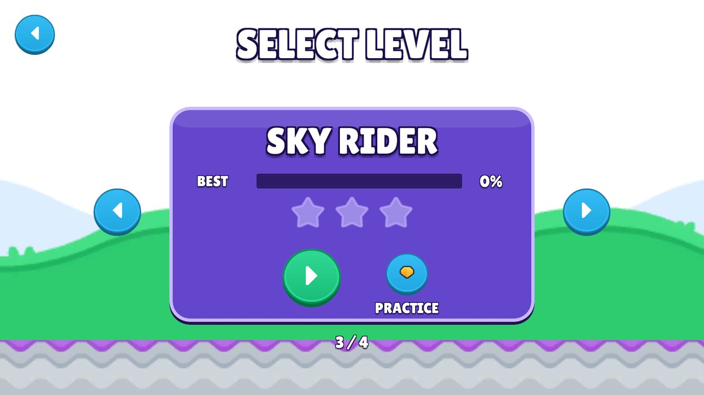

Play in browser
Tap, click or press Space to jump. Hold to keep jumping, Esc pauses.
Plays on phones too: turn your phone sideways. Stuck on a level? Try practice mode with checkpoints.
Screenshots






Run on the ceiling